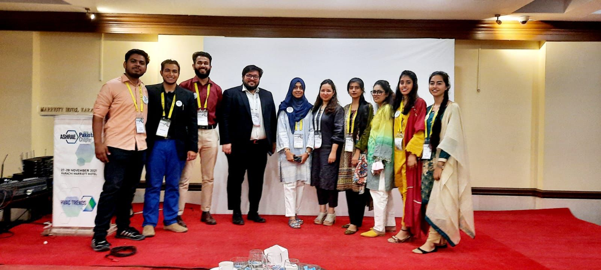
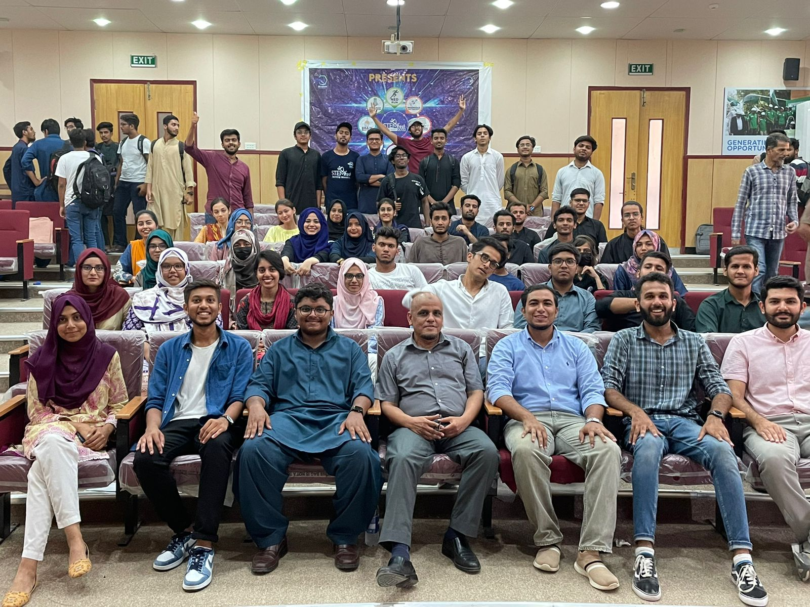
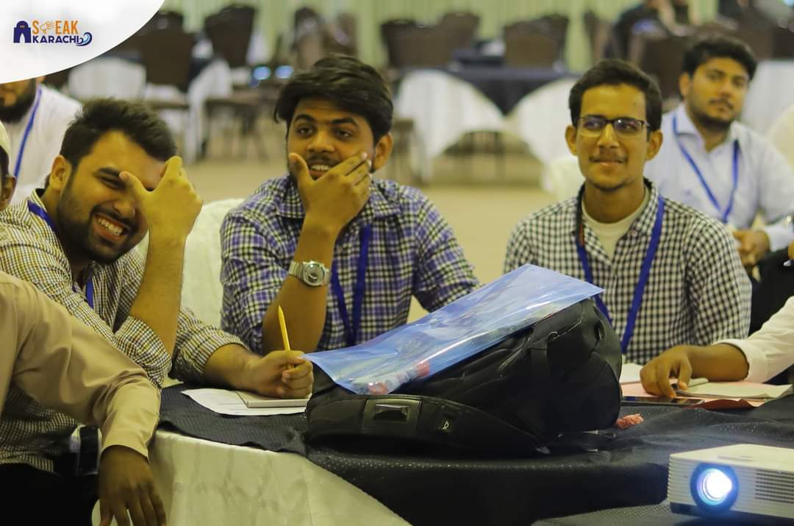

Led and volunteered in two major events of the HVAC International Conference as a society representative, contributing to the success of these professional gatherings.

Led and managed various events during STEMfest, promoting science, technology, engineering, and mathematics education and innovation.

Participated in the Model United Nations conference, engaging with students from diverse educational institutes across Karachi, representing different backgrounds and cultures.
